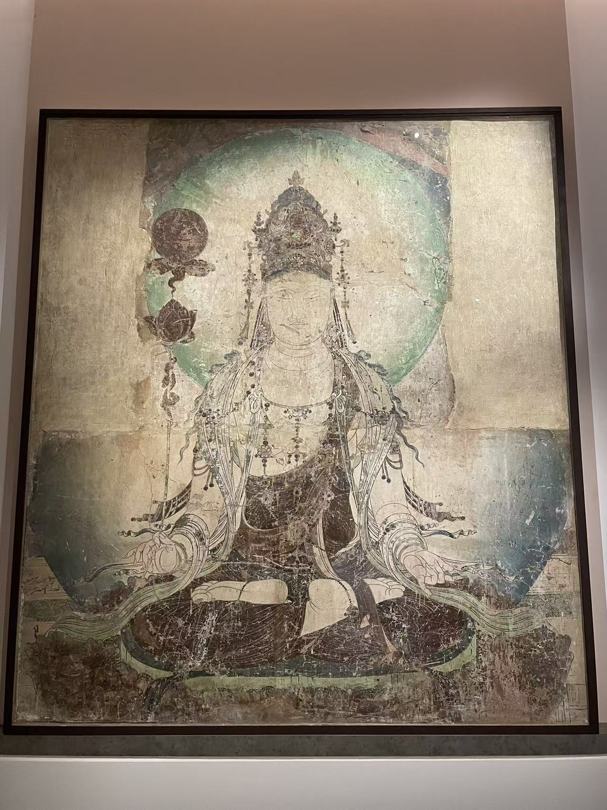

五代 / 寺院壁画
虚空藏菩萨壁画
看画
点击照片可放大；有多张照片时，可以切换查看。


作品札记
菩萨结跏趺坐，一只手举起长茎莲花，花上托着层叠的圆形物。手指、细茎与花上持物从身侧一路向上，把视线引出对称的坐姿；冠饰和头光则把人物重新收束在中央。
吉美展签将持物解释为如意宝珠，并据此题为虚空藏菩萨。法国国家藏品记录列高194、宽172厘米，1986年购藏，旧藏者为巴黎的卢芹斋。它的收藏经历由此与这一批壁画产生联系，但不能只据同一位古董商经手，便认定原来在同一面墙上。
2021年关于传慈胜寺壁画的研究也讨论了吉美这件作品，并提出持物可能支持日光菩萨的另一种解释。馆方仍采用虚空藏菩萨之名。莲花上到底托着什么，正是这幅画值得停下来辨认的地方。
资料：吉美藏品：法国国家文化遗产平台 · 2021年断代与图像研究（摘要）
吉美展签与法国国家藏品记录只明确到河南寺院，未指名慈胜寺；本专题将它作为相关残片并读。展签列五代，国家记录进一步列952年。